About Me
Hi! I'm Walker Immel (or Forrest officially, but I
don't mind either name) and I love music and technology.
I'm a software developer and audio engineer that graduated from Winthrop University where I earned degrees in Computer Science and Music Technology. My latest interests have been in exploring computer graphics using OpenGL and creative coding using languages like Orca, Strudel, and Hydra.
I enjoy experimenting with audio software and have been getting into the hardware side more lately, and built the Helios One synth. Some of my interests outside of music
and/or technology include:
- Art: drawing/sketching, painting (watercolor), digital art
- Reading: mostly fantasy & sci-fi. currently reading The Light of All that Falls by James Islington and Project Hail Mary by Andy Weir in preparation of the film
- Pottery: i took a ceramics class in college and absolutely loved it. i recently got some space at a studio near my home and can't wait to get back into it. there's something about crafting a physical object with your hands
- Puzzles: i love puzzles and puzzle games! the last one i played was Type Help which was great and im currently enjoying the rusty lake series
- Movies: ask to add me on letterboxd :)
Tech Stack / Skills
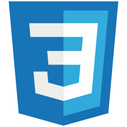
CSS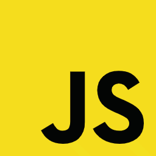
JavaScript Tailwind React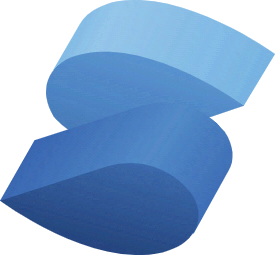
Solid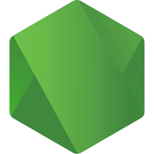
Node.js Express.js C# / .NET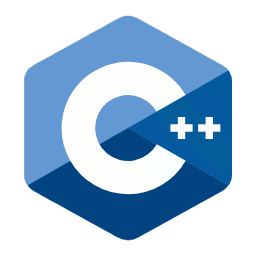
C++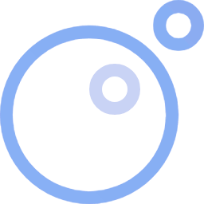
Lua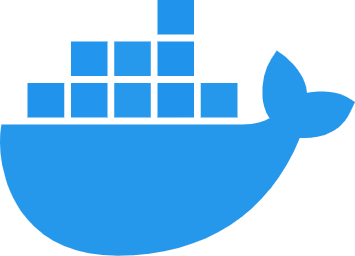
Docker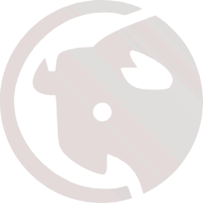
Yaak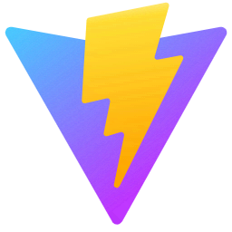
Vite Vitest Playwright
Ableton Live Pro Tools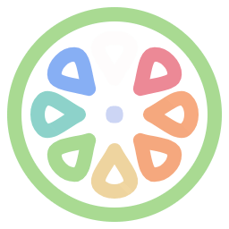
JUCE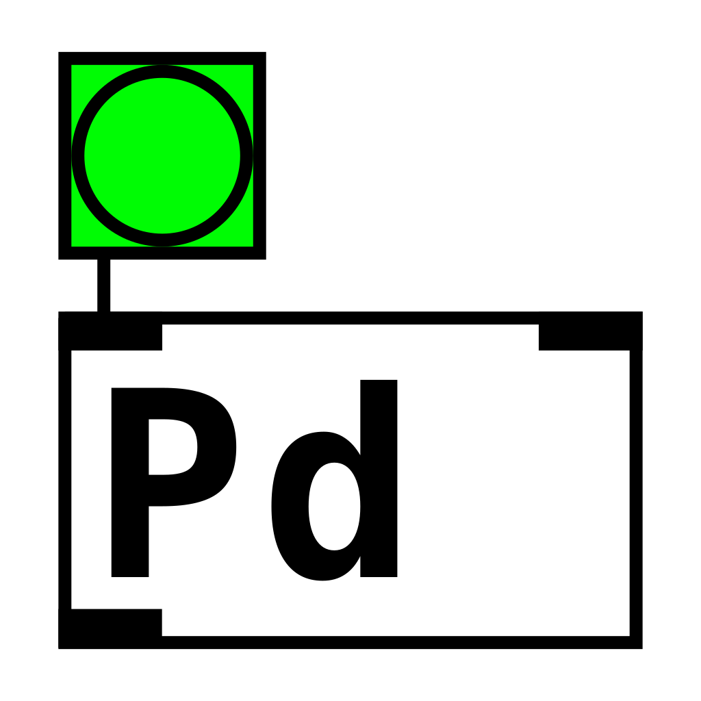
PureData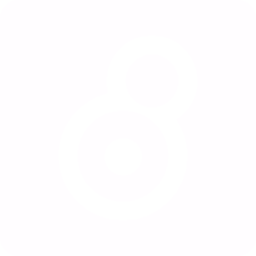
MaxContact Me